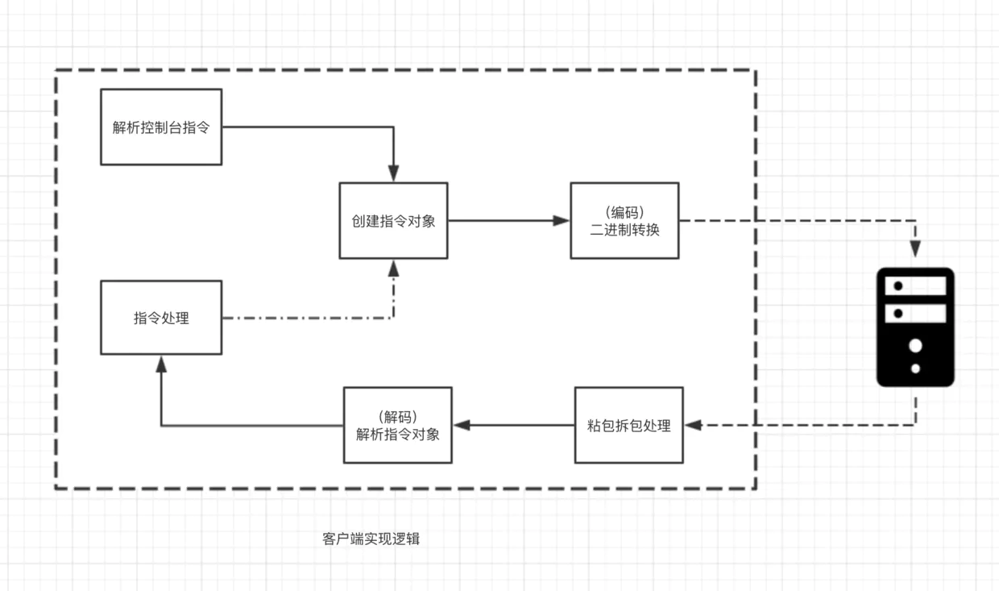
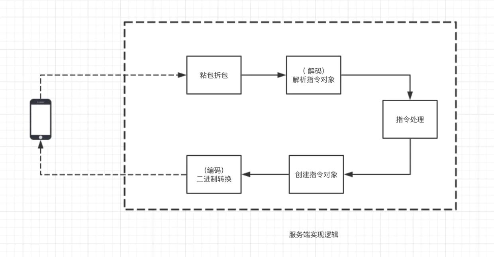
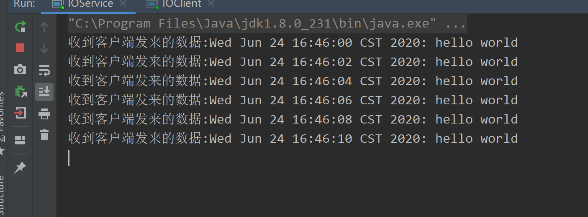
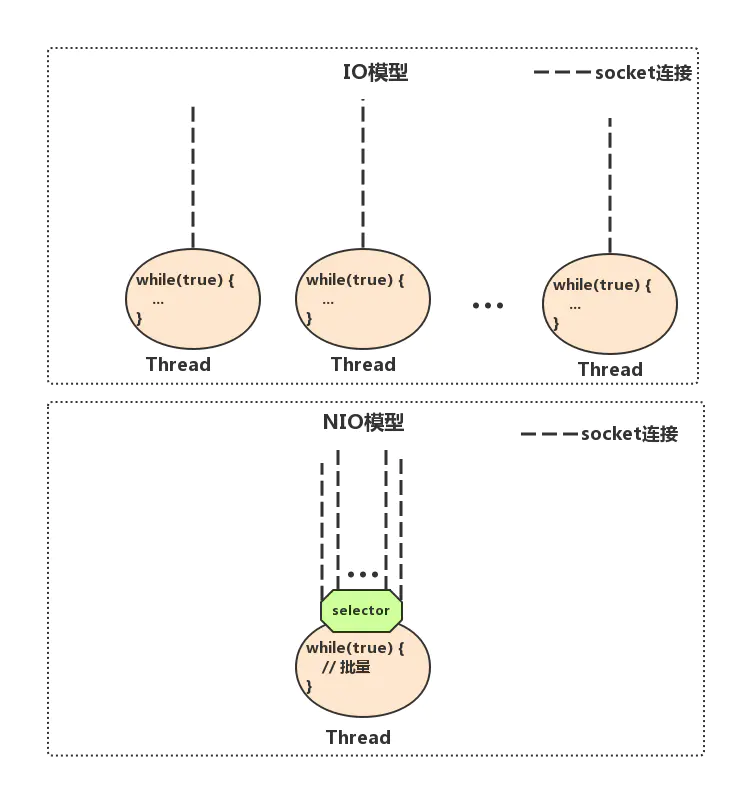

Netty服务端和客户端的启动
本文为掘金小册笔记
https://netty.io/wiki/user-guide-for-4.x.html
我们使用 Netty 统一的 IO 读写 API 以及强大的 pipeline 来编写业务处理逻辑，在后续的章节中，我会通过 IM 这个例子，带你逐步了解 Netty 的以下核心知识点。
- 服务端如何启动
- 客户端如何启动
- 数据载体 ByteBuf
- 长连自定义协议如何设计
- 粘包拆包原理与实践
- 如何实现自定义编解码
- pipeline 与 channelHandler
- 定时发心跳怎么做
- 如何进行连接空闲检测
客户端使用 Netty 的程序逻辑结构

上面这幅图展示了客户端的程序逻辑结构
- 首先，客户端会解析控制台指令，比如发送消息或者建立群聊等指令
- 然后，客户端会基于控制台的输入创建一个指令对象，用户告诉服务端具体要干什么事情
- TCP 通信需要的数据格式为二进制，因此，接下来通过自定义二进制协议将指令对象封装成二进制，这一步称为协议的编码
- 对于收到服务端的数据，首先需要截取出一段完整的二进制数据包（拆包粘包相关的内容后续小节会讲解）
- 将此二进制数据包解析成指令对象，比如收到消息
- 将指令对象送到对应的逻辑处理器来处理
服务端使用 Netty 的程序逻辑结构

服务端的程序逻辑结构与客户端非常类似，这里不太赘述。
Netty 是什么？
在开始了解 Netty 是什么之前，我们先来回顾一下，如果我们需要实现一个客户端与服务端通信的程序，使用传统的 IO 编程，应该如何来实现？
IO编程
我们简化下场景：客户端每隔两秒发送一个带有时间戳的 “hello world” 给服务端，服务端收到之后打印。
为了方便演示，下面例子中，服务端和客户端各一个类，把这两个类拷贝到你的 IDE 中，先后运行 IOServer.java 和IOClient.java可看到效果。
下面是传统的 IO 编程中服务端实现
IOServer.java
public class IOService {
public static void main(String[] args) throws Exception {
/**
Server 端首先创建了一个serverSocket来监听 8000 端口，然后创建一个线程，线程里面不断调用阻塞方法 serversocket.accept();获取新的连接，见(1)，
当获取到新的连接之后，给每条连接创建一个新的线程，这个线程负责从该连接中读取数据，见(2)，
然后读取数据是以字节流的方式，见(3)。
*/
ServerSocket serverSocket = new ServerSocket(8000);
// (1) 接收新连接线程
new Thread(() -> {
while (true) {
try {
// (1) 阻塞方法获取新的连接
Socket socket = serverSocket.accept();
// (2) 每一个新的连接都创建一个线程，负责读取数据
new Thread(() -> {
try {
int len;
byte[] data = new byte[1024];
InputStream inputStream = socket.getInputStream();
// (3) 按字节流方式读取数据
while ((len = inputStream.read(data)) != -1) {
System.out.println("收到客户端发来的数据:"+new String(data, 0, len));
}
} catch (IOException e) { }
}).start();
} catch (IOException e) { }
}
}).start();
}
}
Server 端首先创建了一个serverSocket来监听 8000 端口，然后创建一个线程，线程里面不断调用阻塞方法 serversocket.accept();获取新的连接，见(1)，当获取到新的连接之后，给每条连接创建一个新的线程，这个线程负责从该连接中读取数据，见(2)，然后读取数据是以字节流的方式，见(3)。
下面是传统的IO编程中客户端实现
IOClient.java
public class IOClient {
public static void main(String[] args) {
new Thread(() -> {
try {
Socket socket = new Socket("127.0.0.1", 8000);
while (true) {
try {
System.out.println("向服务端发送数据:"+new String(new Date()+"hello world"));
socket.getOutputStream().write((new Date() + ": hello world").getBytes());
Thread.sleep(2000);
} catch (Exception e) { }
}
} catch (IOException e) { }
}).start();
}
}
客户端的代码相对简单，连接上服务端 8000 端口之后，每隔 2 秒，我们向服务端写一个带有时间戳的 “hello world”。


IO 编程模型在客户端较少的情况下运行良好，但是对于客户端比较多的业务来说，单机服务端可能需要支撑成千上万的连接，IO 模型可能就不太合适了，我们来分析一下原因。
上面的 demo，从服务端代码中我们可以看到，在传统的 IO 模型中，每个连接创建成功之后都需要一个线程来维护，每个线程包含一个 while 死循环，那么 1w 个连接对应 1w 个线程，继而 1w 个 while 死循环，这就带来如下几个问题：
- 线程资源受限：线程是操作系统中非常宝贵的资源，同一时刻有大量的线程处于阻塞状态是非常严重的资源浪费，操作系统耗不起
- 线程切换效率低下：单机 CPU 核数固定，线程爆炸之后操作系统频繁进行线程切换，应用性能急剧下降。
- 除了以上两个问题，IO 编程中，我们看到数据读写是以字节流为单位。
为了解决这三个问题，JDK 在 1.4 之后提出了 NIO。
NIO 编程
关于 NIO 相关的文章网上也有很多，这里不打算详细深入分析，下面简单描述一下 NIO 是如何解决以上三个问题的。
线程资源受限
NIO 编程模型中，新来一个连接不再创建一个新的线程，而是可以把这条连接直接绑定到某个固定的线程，然后这条连接所有的读写都由这个线程来负责，那么他是怎么做到的？我们用一幅图来对比一下 IO 与 NIO

如上图所示，IO 模型中，一个连接来了，会创建一个线程，对应一个 while 死循环，死循环的目的就是不断监测这条连接上是否有数据可以读，大多数情况下，1w 个连接里面同一时刻只有少量的连接有数据可读，因此，很多个 while 死循环都白白浪费掉了，因为读不出啥数据。
而在 NIO 模型中，他把这么多 while 死循环变成一个死循环，这个死循环由一个线程控制，那么他又是如何做到一个线程，一个 while 死循环就能监测1w个连接是否有数据可读的呢？ 这就是 NIO 模型中 selector 的作用，一条连接来了之后，现在不创建一个 while 死循环去监听是否有数据可读了，而是直接把这条连接注册到 selector 上，然后，通过检查这个 selector，就可以批量监测出有数据可读的连接，进而读取数据，下面我再举个非常简单的生活中的例子说明 IO 与 NIO 的区别。
在一家幼儿园里，小朋友有上厕所的需求，小朋友都太小以至于你要问他要不要上厕所，他才会告诉你。幼儿园一共有 100 个小朋友，有两种方案可以解决小朋友上厕所的问题：
- 每个小朋友配一个老师。每个老师隔段时间询问小朋友是否要上厕所，如果要上，就领他去厕所，100 个小朋友就需要 100 个老师来询问，并且每个小朋友上厕所的时候都需要一个老师领着他去上，这就是IO模型，一个连接对应一个线程。
- 所有的小朋友都配同一个老师。这个老师隔段时间询问所有的小朋友是否有人要上厕所，然后每一时刻把所有要上厕所的小朋友批量领到厕所，这就是 NIO 模型，所有小朋友都注册到同一个老师，对应的就是所有的连接都注册到一个线程，然后批量轮询。
这就是 NIO 模型解决线程资源受限的方案，实际开发过程中，我们会开多个线程，每个线程都管理着一批连接，相对于 IO 模型中一个线程管理一条连接，消耗的线程资源大幅减少
线程切换效率低下
由于 NIO 模型中线程数量大大降低，线程切换效率因此也大幅度提高
IO读写面向流
IO 读写是面向流的，一次性只能从流中读取一个或者多个字节，并且读完之后流无法再读取，你需要自己缓存数据。 而 NIO 的读写是面向 Buffer 的，你可以随意读取里面任何一个字节数据，不需要你自己缓存数据，这一切只需要移动读写指针即可。
简单讲完了 JDK NIO 的解决方案之后，我们接下来使用 NIO 的方案替换掉 IO 的方案，我们先来看看，如果用 JDK 原生的 NIO 来实现服务端，该怎么做
public class NIOServer {
public static void main(String[] args) throws IOException {
Selector serverSelector = Selector.open();
Selector clientSelector = Selector.open();
new Thread(() -> {
try {
// 对应IO编程中服务端启动
ServerSocketChannel listenerChannel = ServerSocketChannel.open();
listenerChannel.socket().bind(new InetSocketAddress(8000));
listenerChannel.configureBlocking(false);
listenerChannel.register(serverSelector, SelectionKey.OP_ACCEPT);
while (true) {
// 监测是否有新的连接，这里的1指的是阻塞的时间为 1ms
if (serverSelector.select(1) > 0) {
Set<SelectionKey> set = serverSelector.selectedKeys();
Iterator<SelectionKey> keyIterator = set.iterator();
while (keyIterator.hasNext()) {
SelectionKey key = keyIterator.next();
if (key.isAcceptable()) {
try {
// (1) 每来一个新连接，不需要创建一个线程，而是直接注册到clientSelector
SocketChannel clientChannel = ((ServerSocketChannel) key.channel()).accept();
clientChannel.configureBlocking(false);
clientChannel.register(clientSelector, SelectionKey.OP_READ);
} finally {
keyIterator.remove();
}
}
}
}
}
} catch (IOException ignored) {
}
}).start();
new Thread(() -> {
try {
while (true) {
// (2) 批量轮询是否有哪些连接有数据可读，这里的1指的是阻塞的时间为 1ms
if (clientSelector.select(1) > 0) {
Set<SelectionKey> set = clientSelector.selectedKeys();
Iterator<SelectionKey> keyIterator = set.iterator();
while (keyIterator.hasNext()) {
SelectionKey key = keyIterator.next();
if (key.isReadable()) {
try {
SocketChannel clientChannel = (SocketChannel) key.channel();
ByteBuffer byteBuffer = ByteBuffer.allocate(1024);
// (3) 面向 Buffer
clientChannel.read(byteBuffer);
byteBuffer.flip();
System.out.println(Charset.defaultCharset().newDecoder().decode(byteBuffer)
.toString());
} finally {
keyIterator.remove();
key.interestOps(SelectionKey.OP_READ);
}
}
}
}
}
} catch (IOException ignored) {
}
}).start();
}
}
相信大部分没有接触过 NIO 的同学应该会直接跳过代码来到这一行：原来使用 JDK 原生 NIO 的 API 实现一个简单的服务端通信程序是如此复杂!
复杂得我都没耐心解释这一坨代码的执行逻辑(开个玩笑)，我们还是先对照 NIO 来解释一下几个核心思路
- NIO 模型中通常会有两个线程，每个线程绑定一个轮询器 selector ，在我们这个例子中
serverSelector负责轮询是否有新的连接，clientSelector负责轮询连接是否有数据可读 - 服务端监测到新的连接之后，不再创建一个新的线程，而是直接将新连接绑定到
clientSelector上，这样就不用 IO 模型中 1w 个 while 循环在死等，参见(1) clientSelector被一个 while 死循环包裹着，如果在某一时刻有多条连接有数据可读，那么通过clientSelector.select(1)方法可以轮询出来，进而批量处理，参见(2)- 数据的读写面向 Buffer，参见(3)
其他的细节部分，我不愿意多讲，因为实在是太复杂，你也不用对代码的细节深究到底。总之，强烈不建议直接基于JDK原生NIO来进行网络开发，下面是我总结的原因
- JDK 的 NIO 编程需要了解很多的概念，编程复杂，对 NIO 入门非常不友好，编程模型不友好，ByteBuffer 的 Api 简直反人类
- 对 NIO 编程来说，一个比较合适的线程模型能充分发挥它的优势，而 JDK 没有给你实现，你需要自己实现，就连简单的自定义协议拆包都要你自己实现
- JDK 的 NIO 底层由 epoll 实现，该实现饱受诟病的空轮询 bug 会导致 cpu 飙升 100%
- 项目庞大之后，自行实现的 NIO 很容易出现各类 bug，维护成本较高，上面这一坨代码我都不能保证没有 bug
正因为如此，我客户端代码都懒得写给你看了==!，你可以直接使用IOClient.java与NIOServer.java通信
JDK 的 NIO 犹如带刺的玫瑰，虽然美好，让人向往，但是使用不当会让你抓耳挠腮，痛不欲生，正因为如此，Netty 横空出世！
Netty编程
那么 Netty 到底是何方神圣？ 用一句简单的话来说就是：Netty 封装了 JDK 的 NIO，让你用得更爽，你不用再写一大堆复杂的代码了。 用官方正式的话来说就是：Netty 是一个异步事件驱动的网络应用框架，用于快速开发可维护的高性能服务器和客户端。
下面是我总结的使用 Netty 不使用 JDK 原生 NIO 的原因
- 使用 JDK 自带的NIO需要了解太多的概念，编程复杂，一不小心 bug 横飞
- Netty 底层 IO 模型随意切换，而这一切只需要做微小的改动，改改参数，Netty可以直接从 NIO 模型变身为 IO 模型
- Netty 自带的拆包解包，异常检测等机制让你从NIO的繁重细节中脱离出来，让你只需要关心业务逻辑
- Netty 解决了 JDK 的很多包括空轮询在内的 Bug
- Netty 底层对线程，selector 做了很多细小的优化，精心设计的 reactor 线程模型做到非常高效的并发处理
- 自带各种协议栈让你处理任何一种通用协议都几乎不用亲自动手
- Netty 社区活跃，遇到问题随时邮件列表或者 issue
- Netty 已经历各大 RPC 框架，消息中间件，分布式通信中间件线上的广泛验证，健壮性无比强大
看不懂没有关系，这些我们在后续的课程中我们都可以学到，接下来我们用 Netty 的版本来重新实现一下本文开篇的功能吧
首先，引入 Maven 依赖，本文后续 Netty 都是基于 4.1.6.Final 版本
然后，下面是服务端实现部分
/**
* 我们创建了两个NioEventLoopGroup，这两个对象可以看做是传统IO编程模型的两大线程组
* bossGroup表示监听端口，accept 新连接的线程组
* workerGroup表示处理每一条连接的数据读写的线程组
*/
NioEventLoopGroup boss = new NioEventLoopGroup();
NioEventLoopGroup worker = new NioEventLoopGroup();
//创建一个引导类 ServerBootstrap，这个类将引导我们进行服务端的启动工作
ServerBootstrap serverBootstrap = new ServerBootstrap();
serverBootstrap
//通过.group(bossGroup, workerGroup)给引导类配置两大线程组，这个引导类的线程模型也就定型了。
.group(boss, worker)
//然后，我们指定我们服务端的 IO 模型为NIO，我们通过.channel(NioServerSocketChannel.class)来指定 IO 模型，当然，这里也有其他的选择，如果你想指定 IO 模型为 BIO，那么这里配置上OioServerSocketChannel.class类型即可，当然通常我们也不会这么做，因为Netty的优势就在于NIO。
.channel(NioServerSocketChannel.class)
//我们调用childHandler()方法，给这个引导类创建一个ChannelInitializer，这里主要就是定义后续每条连接的数据读写
//ChannelInitializer这个类中，我们注意到有一个泛型参数NioSocketChannel，这个类呢，就是 Netty 对 NIO 类型的连接的抽象，而我们前面NioServerSocketChannel也是对 NIO 类型的连接的抽象，NioServerSocketChannel和NioSocketChannel的概念可以和 BIO 编程模型中的ServerSocket以及Socket两个概念对应上
.childHandler(new ChannelInitializer<NioSocketChannel>() {
protected void initChannel(NioSocketChannel ch) {
ch.pipeline().addLast(new StringDecoder());
ch.pipeline().addLast(new SimpleChannelInboundHandler<String>() {
@Override
protected void channelRead0(ChannelHandlerContext ctx, String msg) {
System.out.println(msg);
}
});
}
});
serverBootstrap.bind(8000);
/**
* 我们的最小化参数配置到这里就完成了
* 总结一下，要启动一个Netty服务端，必须要指定三类属性，分别是线程模型、IO 模型、连接读写处理逻辑.
* 有了这三者，之后在调用bind(8000)，我们就可以在本地绑定一个 8000 端口启动起来
*/
这么一小段代码就实现了我们前面 NIO 编程中的所有的功能，包括服务端启动，接受新连接，打印客户端传来的数据，怎么样，是不是比 JDK 原生的 NIO 编程优雅许多？
初学 Netty 的时候，由于大部分人对 NIO 编程缺乏经验，因此，将 Netty 里面的概念与 IO 模型结合起来可能更好理解
boss对应IOServer.java中的接受新连接线程，主要负责创建新连接worker对应IOServer.java中的负责读取数据的线程，主要用于读取数据以及业务逻辑处理
然后剩下的逻辑我在后面的系列文章中会详细分析，你可以先把这段代码拷贝到你的 IDE 里面，然后运行 main 函数
然后下面是客户端 NIO 的实现部分
//NettyClient.java
public class NettyClient {
public static void main(String[] args) throws InterruptedException {
Bootstrap bootstrap = new Bootstrap();
NioEventLoopGroup group = new NioEventLoopGroup();
bootstrap.group(group)
.channel(NioSocketChannel.class)
.handler(new ChannelInitializer<Channel>() {
@Override
protected void initChannel(Channel ch) {
ch.pipeline().addLast(new StringEncoder());
}
});
Channel channel = bootstrap.connect("127.0.0.1", 8000).channel();
while (true) {
channel.writeAndFlush(new Date() + ": hello world!");
Thread.sleep(2000);
}
}
}
在客户端程序中，group对应了我们IOClient.java中 main 函数起的线程，剩下的逻辑我在后面的文章中会详细分析，现在你要做的事情就是把这段代码拷贝到你的 IDE 里面，然后运行 main 函数，最后回到 NettyServer.java 的控制台，你会看到效果。
使用 Netty 之后是不是觉得整个世界都美好了，一方面 Netty 对 NIO 封装得如此完美，写出来的代码非常优雅，另外一方面，使用 Netty 之后，网络通信这块的性能问题几乎不用操心，尽情地让 Netty 榨干你的 CPU 吧。
服务端启动流程
这一小节，我们来学习一下如何使用 Netty 来启动一个服务端应用程序，以下是服务端启动的一个非常精简的 Demo:
NettyServer.java
public class NettyServer {
public static void main(String[] args) {
NioEventLoopGroup bossGroup = new NioEventLoopGroup();
NioEventLoopGroup workerGroup = new NioEventLoopGroup();
ServerBootstrap serverBootstrap = new ServerBootstrap();
serverBootstrap
.group(bossGroup, workerGroup)
.channel(NioServerSocketChannel.class)
.childHandler(new ChannelInitializer<NioSocketChannel>() {
protected void initChannel(NioSocketChannel ch) {
}
});
serverBootstrap.bind(8000);
}
}
- 首先看到，我们创建了两个
NioEventLoopGroup，这两个对象可以看做是传统IO编程模型的两大线程组，bossGroup表示监听端口，accept 新连接的线程组，workerGroup表示处理每一条连接的数据读写的线程组，不理解的同学可以看一下上一小节《Netty是什么》。用生活中的例子来讲就是，一个工厂要运作，必然要有一个老板负责从外面接活，然后有很多员工，负责具体干活，老板就是bossGroup，员工们就是workerGroup，bossGroup接收完连接，扔给workerGroup去处理。 - 接下来 我们创建了一个引导类
ServerBootstrap，这个类将引导我们进行服务端的启动工作，直接new出来开搞。 - 我们通过
.group(bossGroup, workerGroup)给引导类配置两大线程组，这个引导类的线程模型也就定型了。 - 然后，我们指定我们服务端的 IO 模型为
NIO，我们通过.channel(NioServerSocketChannel.class)来指定 IO 模型，当然，这里也有其他的选择，如果你想指定 IO 模型为 BIO，那么这里配置上OioServerSocketChannel.class类型即可，当然通常我们也不会这么做，因为Netty的优势就在于NIO。 - 接着，我们调用
childHandler()方法，给这个引导类创建一个ChannelInitializer，这里主要就是定义后续每条连接的数据读写，业务处理逻辑，不理解没关系，在后面我们会详细分析。ChannelInitializer这个类中，我们注意到有一个泛型参数NioSocketChannel，这个类呢，就是 Netty 对 NIO 类型的连接的抽象，而我们前面NioServerSocketChannel也是对 NIO 类型的连接的抽象，NioServerSocketChannel和NioSocketChannel的概念可以和 BIO 编程模型中的ServerSocket以及Socket两个概念对应上
我们的最小化参数配置到这里就完成了，我们总结一下就是，要启动一个Netty服务端，必须要指定三类属性，分别是线程模型、IO 模型、连接读写处理逻辑，有了这三者，之后在调用bind(8000)，我们就可以在本地绑定一个 8000 端口启动起来，以上这段代码读者可以直接拷贝到你的 IDE 中运行。
自动绑定递增端口
在上面代码中我们绑定了 8000 端口，接下来我们实现一个稍微复杂一点的逻辑，我们指定一个起始端口号，比如 1000，然后呢，我们从1000号端口往上找一个端口，直到这个端口能够绑定成功，比如 1000 端口不可用，我们就尝试绑定 1001，然后 1002，依次类推。
serverBootstrap.bind(8000);这个方法呢，它是一个异步的方法，调用之后是立即返回的，他的返回值是一个ChannelFuture，我们可以给这个ChannelFuture添加一个监听器GenericFutureListener，然后我们在GenericFutureListener的operationComplete方法里面，我们可以监听端口是否绑定成功，接下来是监测端口是否绑定成功的代码片段
serverBootstrap.bind(8000).addListener(new GenericFutureListener<Future<? super Void>>() {
public void operationComplete(Future<? super Void> future) {
if (future.isSuccess()) {
System.out.println("端口绑定成功!");
} else {
System.err.println("端口绑定失败!");
}
}
});
我们接下来从 1000 端口号，开始往上找端口号，直到端口绑定成功，我们要做的就是在 if (future.isSuccess())的else逻辑里面重新绑定一个递增的端口号，接下来，我们把这段绑定逻辑抽取出一个bind方法
private static void bind(final ServerBootstrap serverBootstrap, final int port) {
serverBootstrap.bind(port).addListener(new GenericFutureListener<Future<? super Void>>() {
public void operationComplete(Future<? super Void> future) {
if (future.isSuccess()) {
System.out.println("端口[" + port + "]绑定成功!");
} else {
System.err.println("端口[" + port + "]绑定失败!");
bind(serverBootstrap, port + 1);
}
}
});
}
然后呢，以上代码中最关键的就是在端口绑定失败之后，重新调用自身方法，并且把端口号加一，然后，在我们的主流程里面，我们就可以直接调用
bind(serverBootstrap, 1000)
读者可以自定修改代码，运行之后可以看到效果，最终会发现，端口成功绑定了在1024，从 1000 开始到 1023，端口均绑定失败了，这是因为在我的 MAC 系统下，1023 以下的端口号都是被系统保留了，需要 ROOT 权限才能绑定。
以上就是自动绑定递增端口的逻辑，接下来，我们来一起学习一下，服务端启动，我们的引导类ServerBootstrap除了指定线程模型，IO 模型，连接读写处理逻辑之外，他还可以干哪些事情？
服务端启动其他方法
handler() 方法
serverBootstrap.handler(new ChannelInitializer<NioServerSocketChannel>() {
protected void initChannel(NioServerSocketChannel ch) {
System.out.println("服务端启动中");
}
})
handler()方法呢，可以和我们前面分析的childHandler()方法对应起来，childHandler()用于指定处理新连接数据的读写处理逻辑，handler()用于指定在服务端启动过程中的一些逻辑，通常情况下呢，我们用不着这个方法。
attr() 方法
serverBootstrap.attr(AttributeKey.newInstance("serverName"), "nettyServer")
attr()方法可以给服务端的 channel，也就是NioServerSocketChannel指定一些自定义属性，然后我们可以通过channel.attr()取出这个属性，比如，上面的代码我们指定我们服务端channel的一个serverName属性，属性值为nettyServer，其实说白了就是给NioServerSocketChannel维护一个map而已，通常情况下，我们也用不上这个方法。
那么，当然，除了可以给服务端 channel NioServerSocketChannel指定一些自定义属性之外，我们还可以给每一条连接指定自定义属性
childAttr() 方法
serverBootstrap.childAttr(AttributeKey.newInstance("clientKey"), "clientValue")
上面的childAttr可以给每一条连接指定自定义属性，然后后续我们可以通过channel.attr()取出该属性。
childOption() 方法
serverBootstrap
.childOption(ChannelOption.SO_KEEPALIVE, true)
.childOption(ChannelOption.TCP_NODELAY, true)
childOption()可以给每条连接设置一些TCP底层相关的属性，比如上面，我们设置了两种TCP属性，其中
ChannelOption.SO_KEEPALIVE表示是否开启TCP底层心跳机制，true为开启ChannelOption.TCP_NODELAY表示是否开启Nagle算法，true表示关闭，false表示开启，通俗地说，如果要求高实时性，有数据发送时就马上发送，就关闭，如果需要减少发送次数减少网络交互，就开启。
其他的参数这里就不一一讲解，有兴趣的同学可以去这个类里面自行研究。
option() 方法
除了给每个连接设置这一系列属性之外，我们还可以给服务端channel设置一些属性，最常见的就是so_backlog，如下设置
serverBootstrap.option(ChannelOption.SO_BACKLOG, 1024)
表示系统用于临时存放已完成三次握手的请求的队列的最大长度，如果连接建立频繁，服务器处理创建新连接较慢，可以适当调大这个参数
总结
- 本文中，我们首先学习了 Netty 服务端启动的流程，一句话来说就是：创建一个引导类，然后给他指定线程模型，IO模型，连接读写处理逻辑，绑定端口之后，服务端就启动起来了。
- 然后，我们学习到 bind 方法是异步的，我们可以通过这个异步机制来实现端口递增绑定。
- 最后呢，我们讨论了 Netty 服务端启动额外的参数，主要包括给服务端 Channel 或者客户端 Channel 设置属性值，设置底层 TCP 参数。
如果，你觉得这个过程比较简单，想深入学习，了解服务端启动的底层原理，可参考这里。
客户端启动流程
上一小节，我们已经学习了 Netty 服务端启动的流程，这一小节，我们来学习一下 Netty 客户端的启动流程。
客户端启动 Demo
对于客户端的启动来说，和服务端的启动类似，依然需要线程模型、IO 模型，以及 IO 业务处理逻辑三大参数，下面，我们来看一下客户端启动的标准流程
NettyClient.java
public class NettyClient {
public static void main(String[] args) throws InterruptedException {
//客户端启动的引导类是 Bootstrap，负责启动客户端以及连接服务端，而上一小节我们在描述服务端的启动的时候，这个辅导类是 ServerBootstrap
Bootstrap bootstrap = new Bootstrap();//服务端是ServerBootstrap,客户端时Bootstrap
NioEventLoopGroup group = new NioEventLoopGroup();
bootstrap
// 1.指定线程模型
.group(group)
// 2.指定 IO 类型为 NIO
.channel(NioSocketChannel.class)
//给引导类指定一个 handler，这里主要就是定义连接的业务处理逻辑
.handler(new ChannelInitializer<Channel>() {
@Override
protected void initChannel(Channel ch) {
ch.pipeline().addLast(new StringEncoder());
}
});
// // 4.建立连接
//配置完线程模型、IO 模型、业务处理逻辑之后，调用 connect 方法进行连接，可以看到 connect 方法有两个参数，第一个参数可以填写 IP 或者域名，第二个参数填写的是端口号，由于 connect 方法返回的是一个 Future，也就是说这个方是异步的，我们通过 addListener 方法可以监听到连接是否成功，进而打印出连接信息
Channel channel = bootstrap.connect("127.0.0.1", 8000).addListener(future -> {
//connect 方法返回的是一个 Future，也就是说这个方是异步的，我们通过 addListener 方法可以监听到连接是否成功，进而打印出连接信息
if (future.isSuccess()) {
System.out.println("连接成功!");
} else {
System.err.println("连接失败!");
}
}).channel();
while (true) {
channel.writeAndFlush(new Date() + ": hello world!");
Thread.sleep(2000);
}
}
}
从上面代码可以看到，客户端启动的引导类是 Bootstrap，负责启动客户端以及连接服务端，而上一小节我们在描述服务端的启动的时候，这个辅导类是 ServerBootstrap，引导类创建完成之后，下面我们描述一下客户端启动的流程
- 首先，与服务端的启动一样，我们需要给它指定线程模型，驱动着连接的数据读写，这个线程的概念可以和第一小节Netty是什么中的
IOClient.java创建的线程联系起来 - 然后，我们指定 IO 模型为
NioSocketChannel，表示 IO 模型为 NIO，当然，你可以可以设置 IO 模型为OioSocketChannel，但是通常不会这么做，因为 Netty 的优势在于 NIO - 接着，给引导类指定一个
handler，这里主要就是定义连接的业务处理逻辑，不理解没关系，在后面我们会详细分析 - 配置完线程模型、IO 模型、业务处理逻辑之后，调用
connect方法进行连接，可以看到connect方法有两个参数，第一个参数可以填写 IP 或者域名，第二个参数填写的是端口号，由于connect方法返回的是一个Future，也就是说这个方是异步的，我们通过addListener方法可以监听到连接是否成功，进而打印出连接信息
到了这里，一个客户端的启动的 Demo 就完成了，其实只要和 客户端 Socket 编程模型对应起来，这里的三个概念就会显得非常简单，遗忘掉的同学可以回顾一下 Netty是什么中的 IOClient.java 再回来看这里的启动流程哦
失败重连
在网络情况差的情况下，客户端第一次连接可能会连接失败，这个时候我们可能会尝试重新连接，重新连接的逻辑写在连接失败的逻辑块里
bootstrap.connect("juejin.im", 80).addListener(future -> {
if (future.isSuccess()) {
System.out.println("连接成功!");
} else {
System.err.println("连接失败!");
// 重新连接
}
});
重新连接的时候，依然是调用一样的逻辑，因此，我们把建立连接的逻辑先抽取出来，然后在重连失败的时候，递归调用自身
private static void connect(Bootstrap bootstrap, String host, int port) {
bootstrap.connect(host, port).addListener(future -> {
if (future.isSuccess()) {
System.out.println("连接成功!");
} else {
System.err.println("连接失败，开始重连");
connect(bootstrap, host, port);
}
});
}
上面这一段便是带有自动重连功能的逻辑，可以看到在连接建立失败的时候，会调用自身进行重连。
但是，通常情况下，连接建立失败不会立即重新连接，而是会通过一个指数退避的方式，比如每隔 1 秒、2 秒、4 秒、8 秒，以 2 的幂次来建立连接，然后到达一定次数之后就放弃连接，接下来我们就来实现一下这段逻辑，我们默认重试 5 次
connect(bootstrap, "juejin.im", 80, MAX_RETRY);
private static void connect(Bootstrap bootstrap, String host, int port, int retry) {
bootstrap.connect(host, port).addListener(future -> {
if (future.isSuccess()) {
System.out.println("连接成功!");
} else if (retry == 0) {
System.err.println("重试次数已用完，放弃连接！");
} else {
// 第几次重连
int order = (MAX_RETRY - retry) + 1;
// 本次重连的间隔
int delay = 1 << order;
System.err.println(new Date() + ": 连接失败，第" + order + "次重连……");
bootstrap.config().group().schedule(() -> connect(bootstrap, host, port, retry - 1), delay, TimeUnit
.SECONDS);
}
});
}
从上面的代码可以看到，通过判断连接是否成功以及剩余重试次数，分别执行不同的逻辑
- 如果连接成功则打印连接成功的消息
- 如果连接失败但是重试次数已经用完，放弃连接
- 如果连接失败但是重试次数仍然没有用完，则计算下一次重连间隔
delay，然后定期重连
在上面的代码中，我们看到，我们定时任务是调用 bootstrap.config().group().schedule(), 其中 bootstrap.config() 这个方法返回的是 BootstrapConfig，他是对 Bootstrap 配置参数的抽象，然后 bootstrap.config().group() 返回的就是我们在一开始的时候配置的线程模型 workerGroup，调 workerGroup 的 schedule 方法即可实现定时任务逻辑。
在 schedule 方法块里面，前面四个参数我们原封不动地传递，最后一个重试次数参数减掉一，就是下一次建立连接时候的上下文信息。读者可以自行修改代码，更改到一个连接不上的服务端 Host 或者 Port，查看控制台日志就可以看到5次重连日志。
以上就是实现指数退避的客户端重连逻辑，接下来，我们来一起学习一下，客户端启动，我们的引导类Bootstrap除了指定线程模型，IO 模型，连接读写处理逻辑之外，他还可以干哪些事情？
客户端启动其他方法
attr() 方法
bootstrap.attr(AttributeKey.newInstance("clientName"), "nettyClient")
attr() 方法可以给客户端 Channel，也就是NioSocketChannel绑定自定义属性，然后我们可以通过channel.attr()取出这个属性，比如，上面的代码我们指定我们客户端 Channel 的一个clientName属性，属性值为nettyClient，其实说白了就是给NioSocketChannel维护一个 map 而已，后续在这个 NioSocketChannel 通过参数传来传去的时候，就可以通过他来取出设置的属性，非常方便。
option() 方法
Bootstrap
.option(ChannelOption.CONNECT_TIMEOUT_MILLIS, 5000)
.option(ChannelOption.SO_KEEPALIVE, true)
.option(ChannelOption.TCP_NODELAY, true)
option() 方法可以给连接设置一些 TCP 底层相关的属性，比如上面，我们设置了三种 TCP 属性，其中
ChannelOption.CONNECT_TIMEOUT_MILLIS表示连接的超时时间，超过这个时间还是建立不上的话则代表连接失败ChannelOption.SO_KEEPALIVE表示是否开启 TCP 底层心跳机制，true 为开启ChannelOption.TCP_NODELAY表示是否开始 Nagle 算法，true 表示关闭，false 表示开启，通俗地说，如果要求高实时性，有数据发送时就马上发送，就设置为 true 关闭，如果需要减少发送次数减少网络交互，就设置为 false 开启
其他的参数这里就不一一讲解，有兴趣的同学可以去这个类里面自行研究。
总结
- 本文中，我们首先学习了 Netty 客户端启动的流程，一句话来说就是：创建一个引导类，然后给他指定线程模型，IO 模型，连接读写处理逻辑，连接上特定主机和端口，客户端就启动起来了。
- 然后，我们学习到
connect方法是异步的，我们可以通过这个异步回调机制来实现指数退避重连逻辑。 - 最后呢，我们讨论了 Netty 客户端启动额外的参数，主要包括给客户端 Channel 绑定自定义属性值，设置底层 TCP 参数。
This blog is under a CC BY-NC-SA 3.0 Unported License
本文链接：http://hogwartsrico.github.io/2020/06/28/Netty-Client-Server-startup/